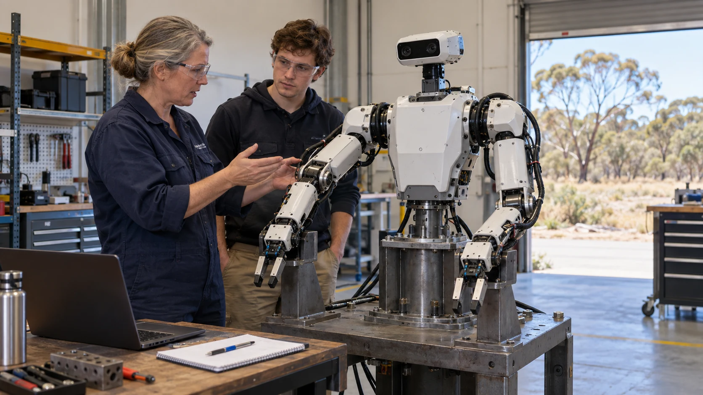

Digital design
Make computer models, test ideas and learn how designs change.
 Sandworm Subterranean SystemsMoreton Bay research & development
Sandworm Subterranean SystemsMoreton Bay research & developmentChapter 13 / 17 · Local capability
Build local skills in robotics, AI, advanced manufacturing and engineering, so islanders can help create and own the technology.
Imagine a young local learning to operate a robot, a tradie learning digital design or a resident helping to test a new material, then seeing the finished product used down the road. We don't have to wait for all the technology and skills to come from somewhere else.

Make computer models, test ideas and learn how designs change.
Test sand, new building products and their strength.
Learn controls, sensors, programming and maintenance.
Make, fit, repair and reuse parts.
Learn how real infrastructure is inspected, documented and kept safe.
The Straddie Maker-Space Lab is the proposed practical space for learning, making and testing. ready SET Co-op is the proposed route into employment, training and compliance. Together, they could help turn ideas into real local capability.
Use accredited training, licensed trades and qualified professionals wherever required. Build records of what people can actually do, rather than just issuing badges.
| Learning stream | Example portfolio evidence |
|---|---|
| Digital design and simulation | CAD, parametric models, versioned simulations, design review |
| Material testing | Sample provenance, calibrated tests, laboratory safety, traceable results |
| Robotics and instrumentation | Bench-scale controls, sensor calibration, fault injection, maintenance |
| Fabrication and repairs | Competency records, supervised safe work, quality documentation |
| Infrastructure assurance | Risk registers, permits, asset records, inspection and incident reporting |
The ambition is to train technology creators, not just installers. Local workers could develop machinery, materials and software that other islands and industries might use. Explore fair employment, contracts and community ownership alongside training.
Shared ownership · New materials · Marine and space robotics.